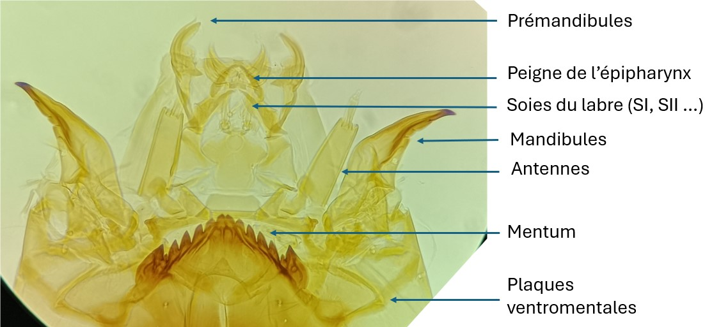

Sous famille des Chironominae
Tribu des chironomini

La capsule céphalique des Chironomini est caractérisée par des plaques ventromentales en éventail et striées sur toute leur hauteur. Les antennes sont insérées directement sur la face dorsale de la capsule céphalique. Les principales pièces nécessaires à l’identification des genres sont le mentum, les plaques ventromentales, les pièces de l’épipharynx (prémandibules et peigne), les mandibules, les soies du labre et les antennes (segments du flagelle, organes de Lauterborn).